// PROJECT 01
Autonomous quadcopter
Goal
For our team the idea was pretty straightforward short term; build a drone platform from scratch that incorporates FDM 3D-Printing in some manner and get if flying reliably. In the longer term we planned to turn this into a payload drone with a swappable tool mounting system so said tools could be swapped out based on the mission.
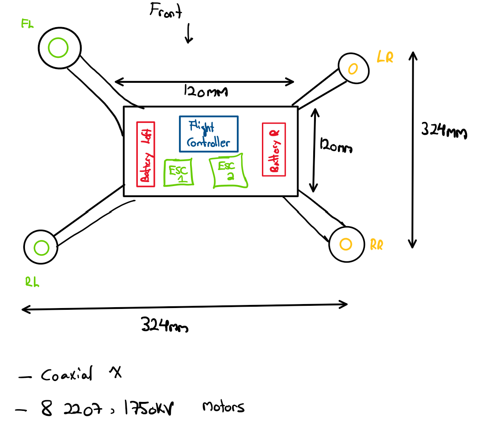
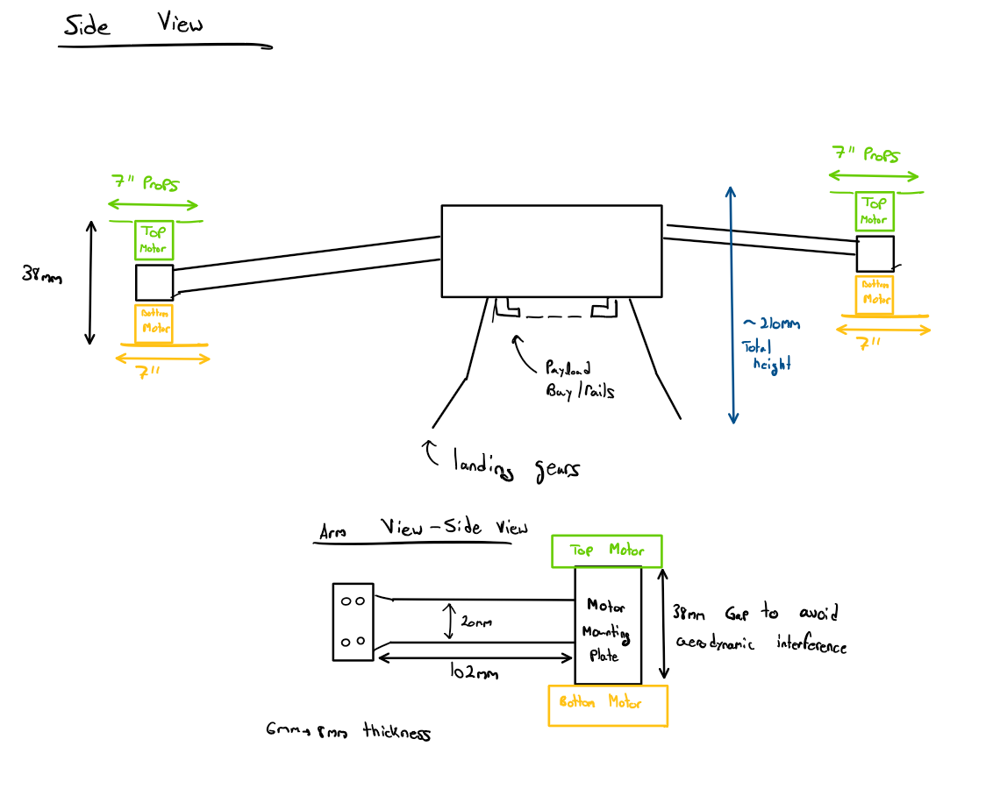
Some early concepts sketches during our research phase.
Process
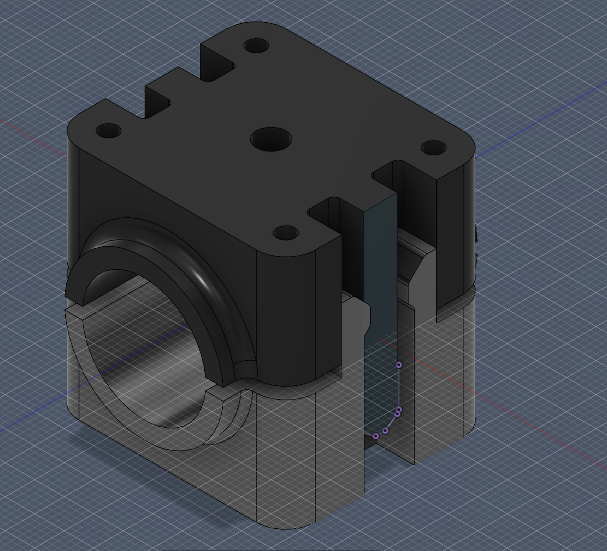
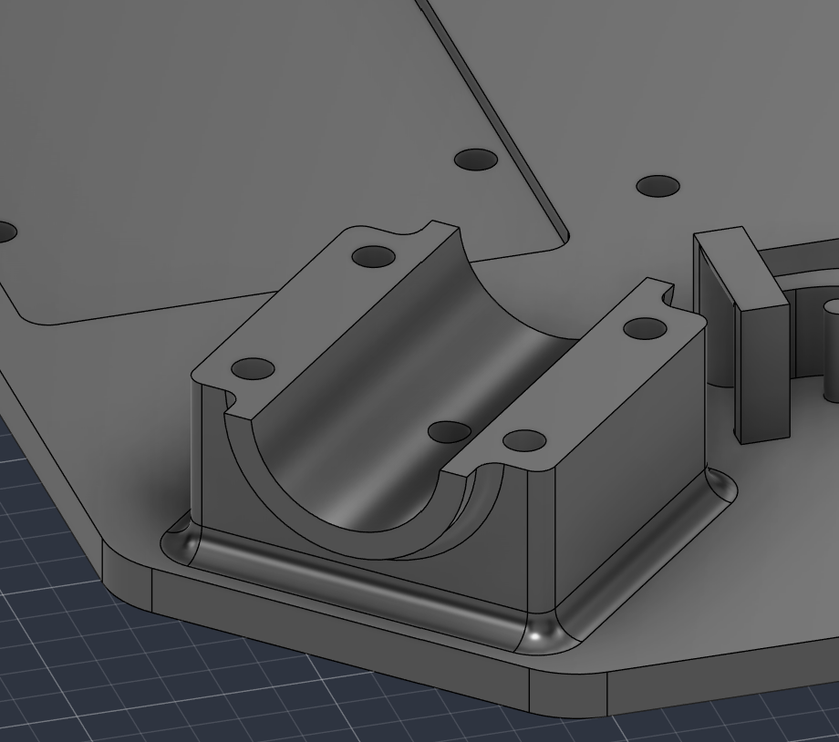
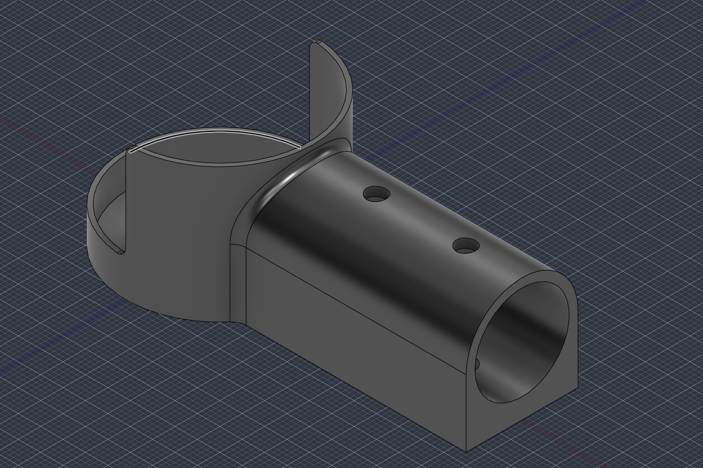
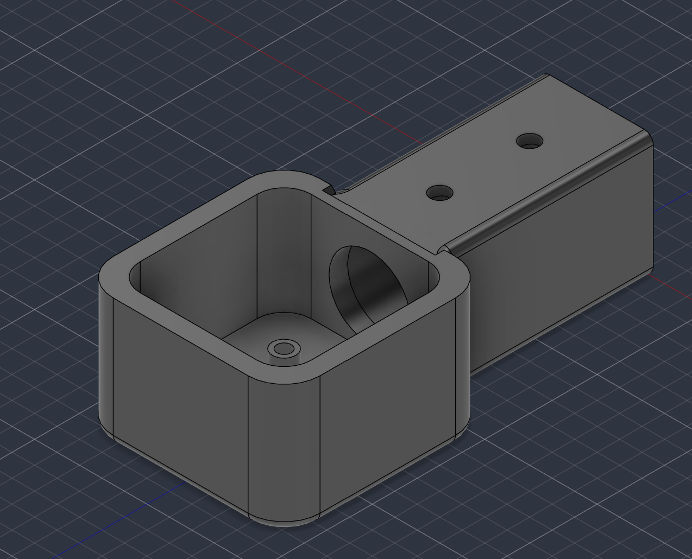
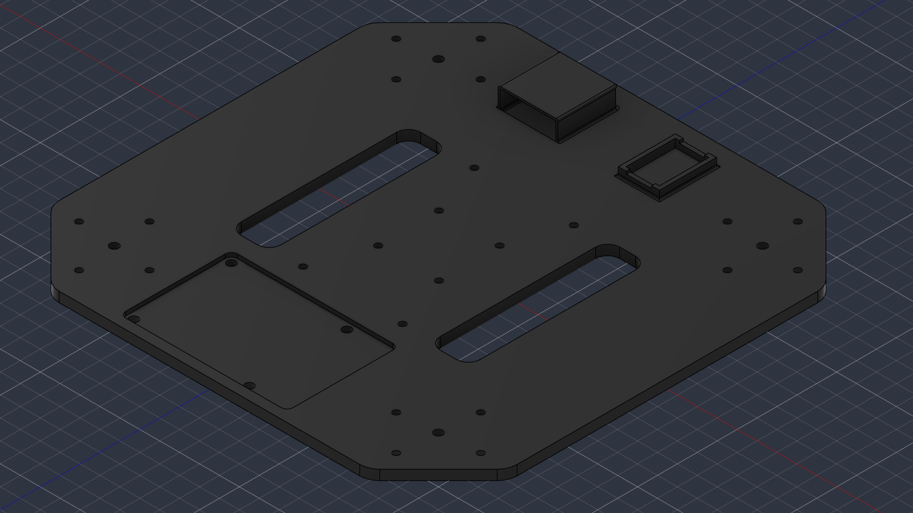
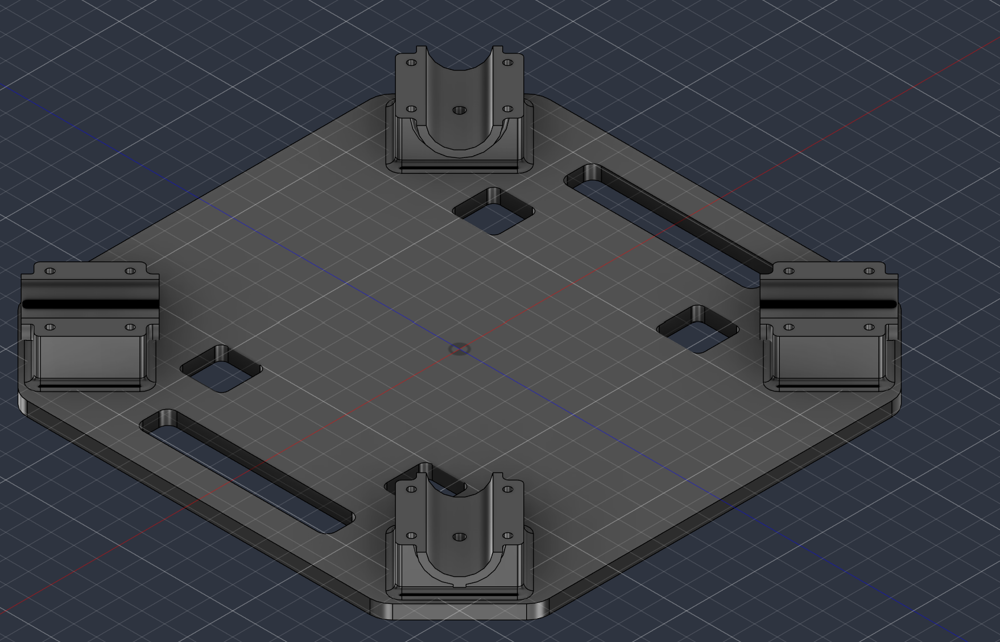
I started by researching different drone types and looking at what other teams had done with a similar scope, before we settled on our prop size, battery specs, and motors. Once those were locked in, I began designing around them. My first instinct was to start with the frame, but instead I spent a week on overcomplicated clamp designs before realizing a much simpler approach, chamfered clamps attached directly to each frame plate, would work better for a 3D printed frame in the first place.
From there I moved on to the frame itself. I initially thought a 120mm x 120mm profile would be enough but after measuring key components like the ESC, Li-Po battery, and accounting for cable management/room for future expansion, I landed on 230mm x 230mm frame instead. The frame design was optimized for 3D printing with space for heat set inserts as well as custom print settings. Once those profiles were set & created, I worked with my teammates to figure out arm length for the carbon fiber tubes and after some research and deliberation we settled on 1ft (305mm) arms.
The motor mounts took the most iteration, around six versions before we landed on a final design. Each round came down to a different issue: whether the motor was actually held securely or at risk of tearing loose, whether there was enough clearance for the carbon tube to seat properly, and whether we needed extensions on the bottom in case we skipped landing gear. We ended up scrapping the extensions and just landing directly on the bottom plate instead.
Assembly is where things got harder. PLA started deforming under use and several heat set inserts weren't bonding well. So to make sure the test flight would actually hold together, we switched to printing everything in PA6-CF. Looking back, that was probably overkill for what the frame actually needed structurally, something I'll keep in mind for future iterations; but at the time it was the safer call to make sure everything survived the first flight.
Outcome
After many weeks of work we finally got our drone to fly successfully on its own which was the actual bar for stage 1. Beyond that we haven't tested payload capacity or flight duration yet. However that was never the goal for this stages as phase 1 was about proving/confirming the all systems could all work together reliably before building anything further on top of it. That foundation is what the swappable mounting system and payload testing will build on.
Project gallery
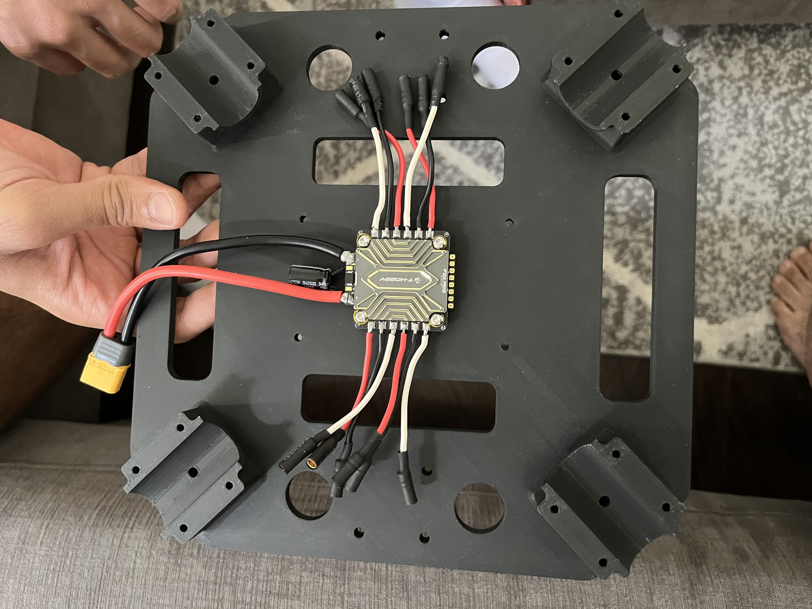
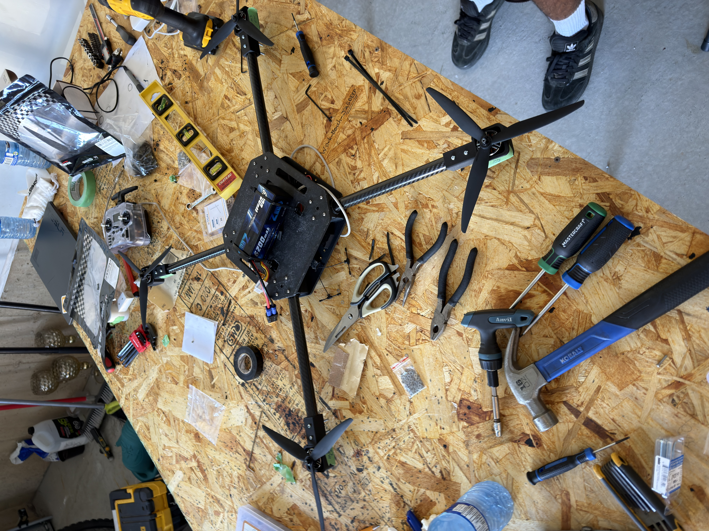
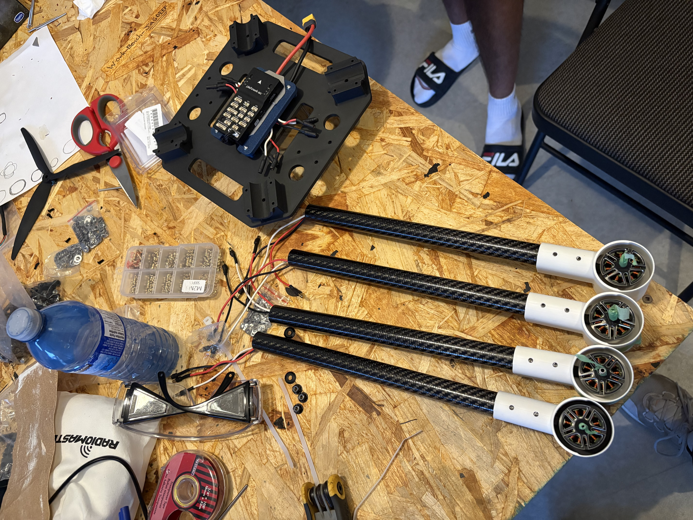
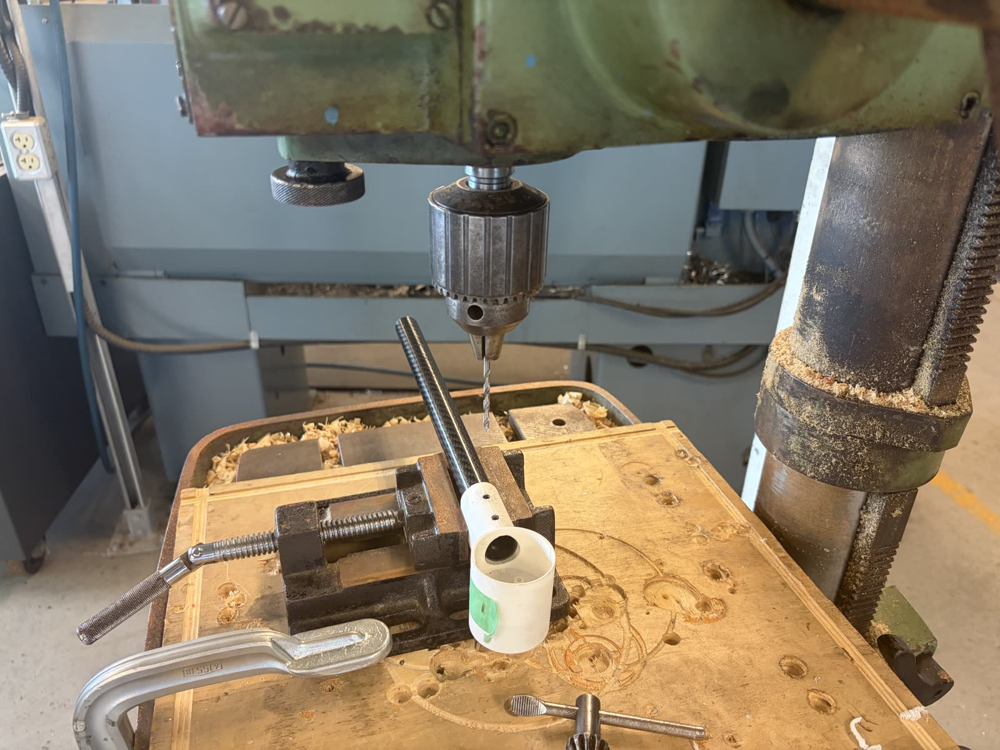